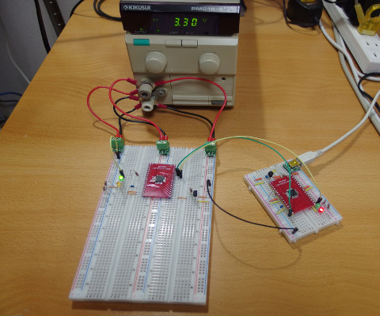

1wire_temp
minicom
$ sudo minicom -D /dev/ttyACM0
Welcome to minicom 2.7.1 OPTIONS: I18n Compiled on Jul 15 2017, 15:04:10. Port /dev/ttyACM0, 13:57:14 Press CTRL-A Z for help on special keys 1wire_temp DS18B20 serial number: 000003645033 27.1 degrees Celsius 27.4 degrees Celsius 27.4 degrees Celsius 27.4 degrees Celsius 27.4 degrees Celsius